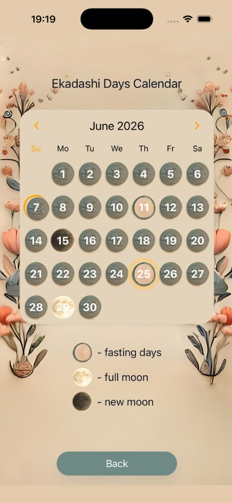
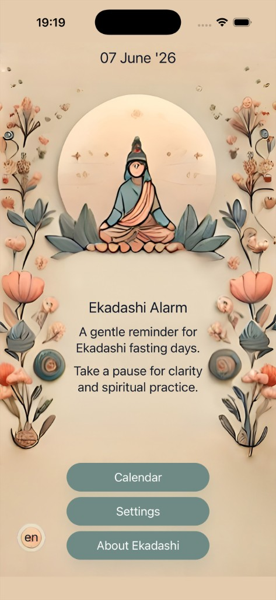
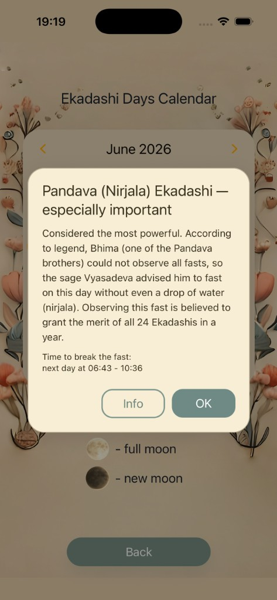

Ekadashi Calendar
See all Ekadashi days for the year in a clean month view. Full moon and new moon are marked so you always know where you are in the lunar cycle.
Observe Ekadashi — the 11th lunar day of each fortnight — with a calm, beautiful calendar, gentle reminders, and parana times for your location.


Ekadashi falls on the 11th lunar day (tithi) of each fortnight — twice a month, usually 24 times a year. For many practitioners it is a day of fasting, prayer, and spiritual focus, especially connected with Lord Vishnu.
See all Ekadashi days for the year in a clean month view. Full moon and new moon are marked so you always know where you are in the lunar cycle.
Choose push notifications 1, 2, or 3 days before each Ekadashi — or turn them off anytime. No account or password required.
Set your city or allow location access to estimate parana — the recommended window to break the fast after Ekadashi — based on local sunrise and sunset.
Thoughtful explanations inside the app: what Ekadashi is, why grains are avoided, the meaning of the number 11, and how fasting relates to mind and willpower.
English, Russian, and Hindi — switch anytime right from the main screen. Designed to feel native in each language.
No login forms. No clutter. Open the app, set your preferences once, and let gentle reminders do the rest.
Soft palette and gentle motion — designed to invite a pause, not demand your attention.


"Ekadashi Days Calendar"
«Календарь дней Экадаши»
"एकादशी दिनों का कैलेंडर"
No. There is no login or password — just open the app and set your preferences.
Parana is estimated based on your city's sunrise and sunset. For strict observance please follow guidance from your teacher, temple, or tradition.
Yes. You can choose reminders 1, 2, or 3 days before — or disable them entirely at any time.
No, traditions vary. The app provides dates and general information, not a personal prescription. Always follow what is appropriate for your health and lineage.
English, Russian, and Hindi. You can switch the language right from the main screen.
Soft reminders. Clear dates. Quiet design.